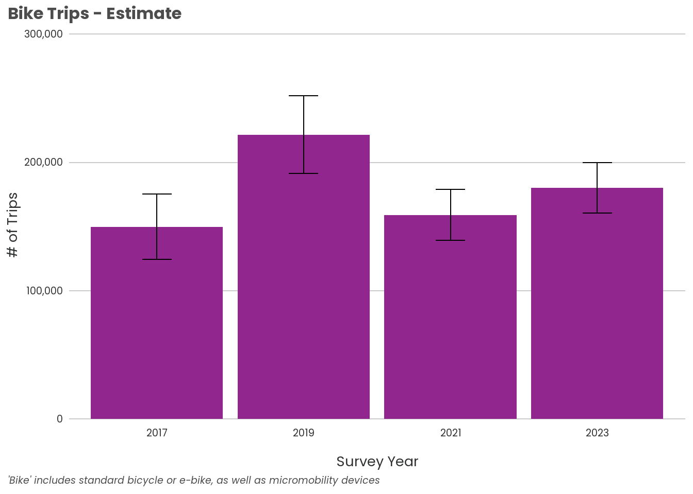
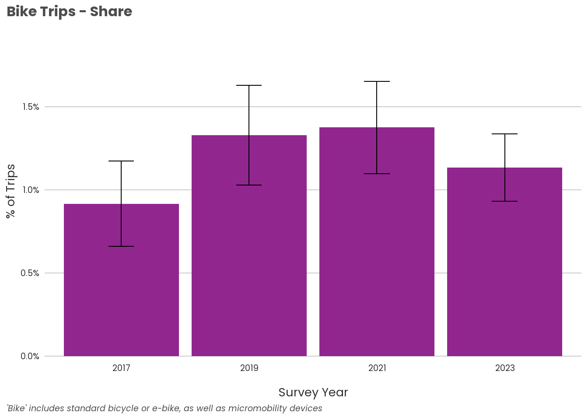

cb_path = str_glue("J:/Projects/Surveys/HHTravel/Survey2023/Data/data_published/PSRC_Codebook_2023_v1.xlsx")
variable_list = readxl::read_xlsx(cb_path, sheet = 'variable_list')
value_labels = readxl::read_xlsx(cb_path, sheet = 'value_labels')
setDT(variable_list)
setDT(value_labels)2023 HTS: Walk, Bike, Micromobility
Travel Mode: Walk, Bike, & Micromobility
Setup
Read in codebook
Read in data from Elmer
hh <- get_query(sql = "SELECT household_id as hh_id, num_trips AS h_num_trips, hhsize, vehicle_count, hhincome_broad,
home_rgcname, home_county, survey_year, hh_weight
FROM HHSurvey.v_households_labels;")
person <- get_query(sql = "SELECT person_id, household_id as hh_id, num_trips AS p_num_trips, age, gender, race_category,
employment, workplace, commute_freq, commute_mode, survey_year, person_weight
FROM HHSurvey.v_persons_labels;")
trip <- get_query(sql = "SELECT trip_id, household_id as hh_id, person_id, origin_x_coord, origin_y_coord, origin_county, origin_rgcname,
dest_x_coord, dest_y_coord, dest_county, dest_rgcname, distance_miles, duration_minutes,
origin_purpose_cat, origin_purpose, dest_purpose_cat, dest_purpose,
mode_type, mode_1, mode_characterization, mode_simple, travelers_total, travelers_hh,
survey_year, trip_weight
FROM HHSurvey.v_trips_labels
WHERE travel_dow NOT IN ('Friday', 'Saturday', 'Sunday');")
setDT(hh)
setDT(person)
setDT(trip)Set IDs as character type
hh[, hh_id := as.character(hh_id)]
person[, hh_id := as.character(hh_id)]
person[, person_id := as.character(person_id)]
trip[, hh_id := as.character(hh_id)]
trip[, person_id := as.character(person_id)]
trip[, trip_id := as.character(trip_id)]
hh[, survey_year := as.character(survey_year)]
person[, survey_year := as.character(survey_year)]
trip[, survey_year := as.character(survey_year)]Get unique modes from trips
trip_modes <- unique(trip[, c("mode_1", "mode_type", "mode_characterization", "mode_simple")])
# add mode_simple to variables list
variable_list <- add_variable(variable_list, "mode_simple", "trip") variable is_checkbox hh person day trip vehicle location
<char> <num> <num> <num> <num> <num> <num> <num>
1: mode_simple 0 0 0 0 1 0 0
description logic data_type shared_name
<char> <char> <char> <char>
1: mode_simple mode_simple integer/categorical mode_simplegroup_labels <- get_grouped_labels(group_id = "group_1", group_name = "mode_simple")
value_labels <- add_values_code(group_name = "mode_simple")Based on the modes in the trip data, will need to filter on mode_characterization to remove “Airplane”
Filter trips to walk, bike, micromobility
trip <- filter(trip, mode_characterization != "Airplane")Initial summaries
hts_data <- list(hh = hh,
person = person,
trip = trip)
ids <- c("hh_id", "person_id", "trip_id")
wts <- c("hh_weight", "person_weight", "trip_weight")
summary_trips <- summarize_weighted(hts_data = hts_data,
summarize_var = "mode_simple",
summarize_by = "survey_year",
id_cols = ids,
wt_cols = wts,
wtname = "trip_weight"
)
mode_summary <- summary_trips$summary$wtd %>%
mutate(moe = prop_se * 1.645)Initial charts


